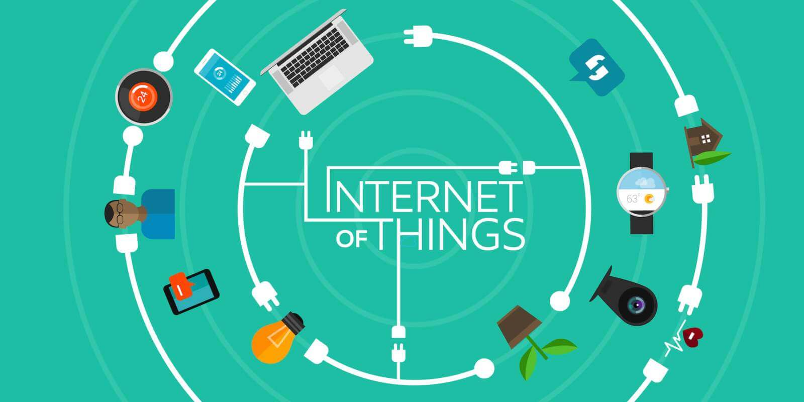
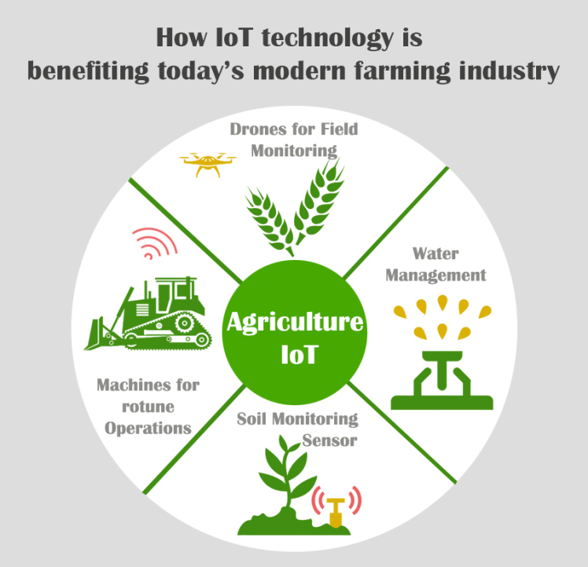

Internet
of Things
Introduction


The Internet of Things refers to the use of standard Internet protocols for the communication between human-to-thing or thing-to-thing in embedded networks. It is an emerging topic of technical, social and economic significance. Real sensors, electronic devices and other objects are being combined with internet connectivity and powerful data analytic capabilities which changes the way we play, live and work. IOT devices are now deployed in a wide range of applications. It range from a tiny capsule to as large as an airplane or a building itself. For instance, the Lenovo smart shoes contain chips which provide support of tracking and analyzing fitness data. Similarly, the electrical appliances including washing machines, and refrigerators can be controlled remotely through IOT. The security cameras installed for surveillance of a location can be monitored remotely anywhere in the world. The emergence of IOT has led to general connection of people, services, sensors and objects. IOT devices are now established in a wide field of applications from smart grids to healthcare and intelligence transport systems. An IOT system consists of smart sensors, connectivity, processing servers, and decisions or relation to people. The sensors collect the data from the surrounding domain and send it to a centralized server or cloud through wireless tools. The server then processes the data to get useful information and takes some decision or displays it to the people. Thus, this is how IOT works.
Some interesting features of IOT are given below:
- Interconnection of Things: It is the first feature which is derived from the name itself. It is the system that deals with a link between “things”. Here the word “things” refers to physical objects or devices which are useful for a user or any application.
- Connection of Things to the internet: It is another essential feature of IOT. Here, self-organizing devices (Things) are connected to the internet, but it is not the system of Intranet of Things or Extranet of Things.
- Uniquely Identifiable Things: To build communication between IOT devices, each device are supposed to retain unique identification, which is defined by their addresses.
- Ubiquity: Ubiquity is the primary feature which indicates a network of IOT system is available anywhere and anytime. But anywhere does not mean “globally” instead, it refers to the concept of where it is needed. Similarly, anytime does not mean “always” instead, it relates to the idea of when it is required.
- Sensing and Actuation capability: Sensors and actuators are used in IOT system. They give sensing and actuation operation, adding smartness to the “Things” or “devices”.
- Interoperable Communication Capability: IOT system uses standard communication protocol which allows the sensors or actuators to be interoperable.
Agriculture
IOT is being utilized in agribusiness to become more acquainted with the yield field by using sensors for checking and controlling in the field. IOT gives a system to detect an item in a controlled climate by presenting a distantly gotten network foundation. It sets out open doors to beat the extension hole between the actual world and PC based frameworks. The fundamental advantage of presenting the IOT in farming is to improve the proficiency and precision with low-level human-mediation. IOT modernization helps in gathering of the data on elements like weather, dampness, temperature and the soil’s productivity, crop electronic examination engages recognizable proof of wild plants, water level, bug area, horticulture, and so on. The fundamental utilizations of IOT in horticulture are Exact Farming, Livestock, and Greenhouses, which are gathered into various observing areas. Agriculture structures a basic action fundamental to the endurance of humankind for roughly a long time. This relationship has brought about the progression of agrarian exercise, at first through the tedious strategies for conventional farming. The current ongoing fast expansion in the worldwide populace has now prompted a critical need to adjust request and supply using new advancements to expand food creation. Agriculture is a provincial organization thought using current development to grow sum and nature of farming things. In the 21st century, farmers made use of GPS, soil looking at, the executives of information and Internet of things headways. Traditional agriculture uses old and conventional cultivating practices and uses this old gear for developing occasional harvests, without the need to assess the climate reports, market, transport and different necessities. Current agribusiness utilizes most recent apparatuses or procedures, for example, sensors, the web, savvy associated deludes, visit networks of producers, every once in a while survey various variables, for example, ideal circumstances for development of the plant, soil quality, check of water quality and how much supplements are required shrewd. And current horticulture makes cultivating loose, conservative, lessens work costs, practical, increment horticultural creation furthermore, gives great quality products.

Benefits
Internet of things serves a scope of utilizations in the space of advanced agribusiness, counting soil and yield control, creature creation, plant development examination and conveyance, accuracy agrarian creation, help with water system assessments, nursery observing frameworks, the food production network checking, and so on. There has been much explore and various undertakings to apply Internet of Things development to provincial locales. The Internet of Things has as of now got reformist changes cultivating. Applying IoT to brilliant agriculture enhances the solutions of the numerous customary cultivating problems, similar to drought reaction, yield advancement, land reasonableness, water system, and vermin control.
Some benefits of using IOT in Agriculture sector are diven below:
- Monitor Climate Conditions: In common, the most popular smart agriculture gadgets are weather stations, combining several smart farming sensors. In fact, located across the field, they gather several data from the environment and send it to the cloud. However, the provided measurements will use to map the climate conditions, choose the appropriate corps and take the required measures to enhance the capacity.
- Smart Greenhouses: Traditional greenhouses can manage the environmental parameters via manual intervention. It often results in less production, energy loss and also labour cost. In fact, the IOT stats 2020 driven smart greenhouses can monitor smartly as well as it controls the climate, deducts the need for manual intervention. Several sensors can measure the environmental parameters which according to the particular crop requirements. That data is stored in a cloud-based platform for further processing and control with the minimum manual intervention.
- Agriculture Drones: To determine, agriculture is one of the important verticals to integrate both ground-based and aerial drones. It is used for crop health assessment, crop monitoring, spraying, irrigation, field analysis etc. The drones can gather multispectral, thermal, and the visual imagery while flying, the data they collect deliver the farmer along with insights into the array of metrics such as plant health indices, yield prediction, measurement of plant height, plant counting, field water pond mapping, reports, chlorophyll measurement, weed pressure mapping etc.
- Livestock Farming: In that case, a smart farming technique allows farmers very better to manage the needs of individual animals and helps to adjust their nutrition. Thereby, it prevents disease and improving herd health. Major farm owners use IoT applications which is useful to monitor the location, well being and health of their cattle. With the help of these details, they determine sick animals. Therefore they can be separated from the herd to prevent the spread of diseases.
In this portion there are so various difficulties like tall caused significant damage of hypothesis, lands confinement, need of care by farmers on way better developing methodologies, imbalanced use of composts, need of value seeds, more age and efficiency, need of fitting limit data and so on Internet of Things has an effect agriculturists or organizations to deal with this load of different difficulties which they stand up to. It is expected that by using IOT in this division the business should find out the plan for various issues like growing water insufficiencies, lack of terrains, real limit structure and so forth this unused advancement has come to resolve this load of issues and has an effect to broaden the sum, quality, brought reasonability, nourishment security and supportability of rural generation. Now, the Internet of Things is changing towards agribusiness industry and empowering farmers to contend with the colossal difficulties they face. Farmers can get tremendous data and information about late patterns and innovation utilizing IOT.